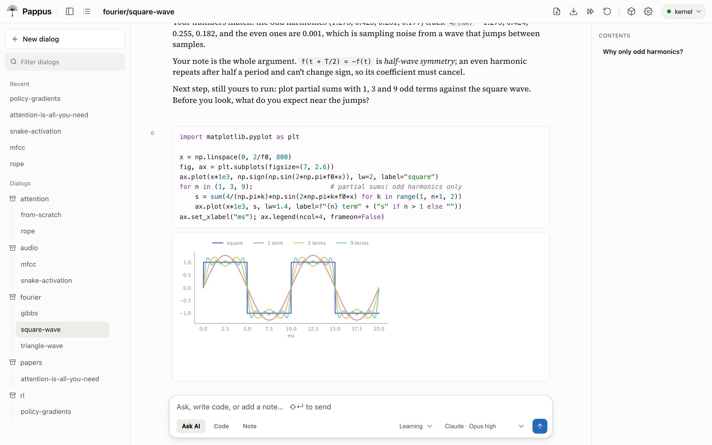
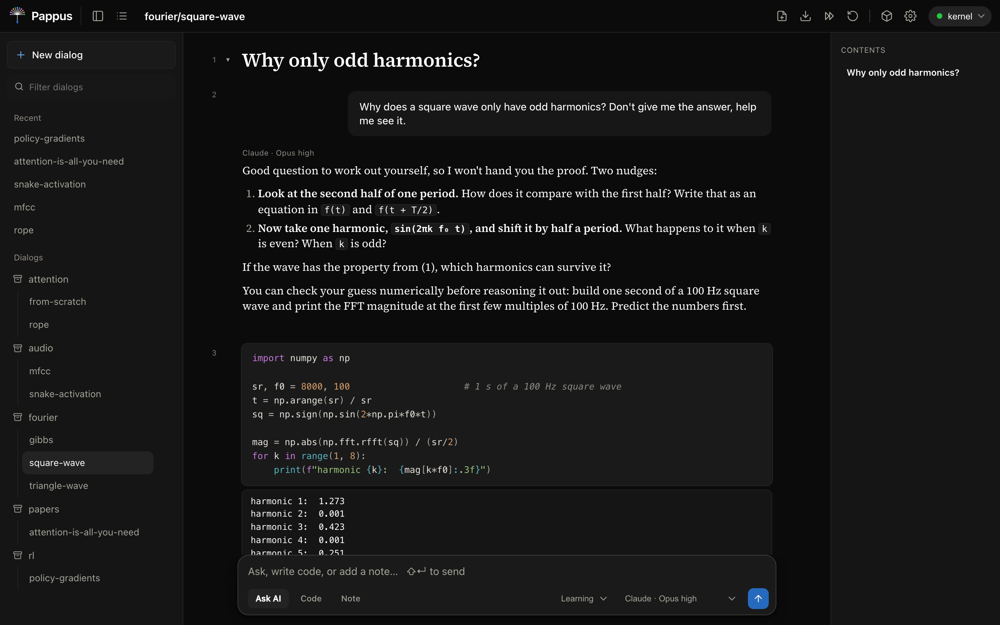
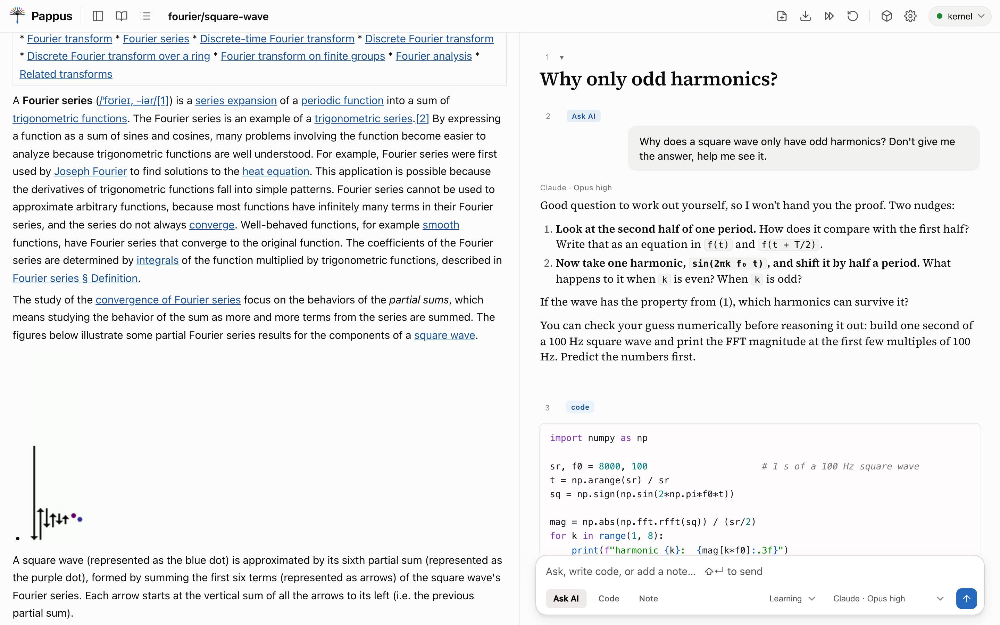

Cells that link
Every cell has a stable id. Type #_<id> to link to it, or prefix a dialog path to link across notebooks. The AI can cite cells the same way.
A local-first notebook that teaches
Pappus is a notebook where the AI is a thinking partner, not a ghostwriter. It follows Answer.AI's SolveIt method: small steps, one cell at a time. The AI never runs your cells, and by default it can't write files. Running the code is your job.
The permission design
A coding agent left alone does what agents do: it writes the whole solution to a scratch file and runs it off-screen. That takes the seat you're supposed to hold. So Pappus keeps the AI's hands off the Run button on every model, and off your files by default.
Runs in Codex's read-only sandbox, so it can't write files. Pappus gives it no web search, only the notebook-cell tools. It is told not to run commands; that part is an instruction, not a lock.
Web search and page fetch are allowed, so answers can rest on current facts. Write, Edit and Bash are denied. The rules sit in one JSON file you can read and change; "deny": [] opens it up completely.
json{ "allow": ["WebSearch", "WebFetch"], "deny": ["Write", "Edit", "Bash"] }
No tools at all. It reads the notebook context and answers in text.
How a session goes
Write a note, or pull a passage in from a paper you're reading. Headings fold into sections, so a long dialog stays navigable.
In learning mode, the default, the AI asks a guiding question or gives a hint and leaves room for you to try. Stuck? It shows the smallest piece that unblocks you, and the idea behind it.
You write the cell and press Run. The kernel keeps your variables between cells, and the AI sees the output, so "is my version equivalent?" gets a real answer.
What it looks like
Every message is a live cell: notes render as markdown, code as highlighted Python, prompts as your question with the AI's answer beneath. Click any cell to edit it.



Features
Every cell has a stable id. Type #_<id> to link to it, or prefix a dialog path to link across notebooks. The AI can cite cells the same way.
After import numpy as np, typing np.ar offers arange. Suggestions come from what you've actually run, via jedi.
Write $`df.shape` in a question and the AI gets the real number, evaluated fresh each time you ask.
Each cell shows its token count and a meter reads out the total. Mute a cell to drop it from context; pin one to keep it.
learning favours your understanding, concise keeps it short, standard answers in full when you want it to.
Matplotlib figures render inline, and so does anything with _repr_html_ or _repr_png_, like a DataFrame.
Command and edit modes, j/k to move, a/b to insert, dd to delete, z to undo it.
Download any dialog as a Jupyter .ipynb or as markdown.
Tag cells from any dialog into a Python package and build it with nbdev. Each function links back to the cell you wrote it in.
Read papers with it
Open a PDF or paste a URL. An arXiv link imports the paper, not the abstract page. It's converted to structured text with marker: sections, tables, equations as LaTeX, figures. A blog post is cut down to its main content.
Highlight a passage. → Notebook brings it in as a note with an empty code cell below, focused, so you reimplement the idea. Ask AI drops it into your next question.
Or step through it. Next section brings the paper in one section at a time, each followed by a cell for your version.
Yours, wherever it runs
Notebooks, papers, libraries: everything you create lives under ~/.config/pappus, out of git. Every save keeps the previous version, and a timestamped snapshot is taken every 15 minutes while you work.
just backup packs it all into one archive, leaving your API keys out unless you ask. Keys themselves sit in a chmod 600 file.
Every script, editor and font is vendored and served locally. Markdown and code highlighting are rendered on the server. The app's own front end loads nothing from a CDN. The network is used when you ask for it: a call to the AI model, a web search, a URL you paste. An imported web page may still show its images from the original site.
A dropdown in the top bar switches targets. The remote box's port is tunnelled over SSH to your localhost, so it never touches the public internet.
Point it at a SolveIt server, or run the small SolveIt-compatible kernel server that ships with it. That one executes real Python with a persistent namespace per dialog, and refuses to listen beyond loopback without a token.
Install
The one prerequisite is uv. It manages Python 3.10+ and every dependency, so you never touch pip or a venv by hand.
shellcurl -LsSf https://astral.sh/uv/install.sh | sh
brew install just
This pulls in the kernel's numpy/torch stack, marker for PDFs, and trafilatura for web pages. torch is large, so let it finish once.
shellgit clone https://github.com/slegroux/pappus && cd pappus
uv sync --extra kernel --extra paper --extra web
Kernel on :5055, the notebook on localhost:8000. A green light in the top-right means you're live; amber means it fell back to the mock, usually because the kernel isn't up yet.
shelljust dev # foreground, Ctrl+C stops both just start # or in the background; just stop to end just app # optional: a double-click launcher for macOS
The default model runs through your installed codex command and needs no key. For Claude or GLM, paste a key under ⚙ Settings; with a Claude Max plan, the claude CLI works too.
Where it comes from
Pappus follows the method behind Answer.AI's SolveIt: work in small steps, keep the human in the driver's seat, and let the AI be a thinking partner. It can connect to a SolveIt server or run on its own. It is an independent project, not affiliated with or endorsed by Answer.AI.
The name has two halves. In Pólya's How to Solve It, "Pappus" is the entry on working backwards from the unknown. And a pappus is the little parachute on a dandelion seed, the thing that carries it forward.
Made by Sylvain Le Groux at Sisyphe.